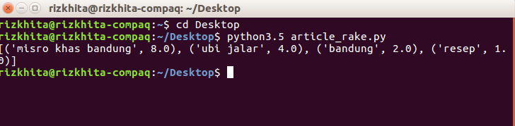

Hello guysss!! First article dari misro release, checkidhott !
Keyword Extraction merupakan teknik NLP (Natural Languange Processing) yang digunakan untuk mengekstrak kata kunci dari suatu dokumen secara otomatis. Keyword Extraction dapat diimplementasikan pada aplikasi-aplikasi seperti search engine, text summarizer ataupun chatbot.
Saat kita menginput kalimat ”Cara Membuat Misro dari Ubi” pada search engine, munculah hasil pencarian seperti
”Resep Cara Membuat Misro Khas Bandung yang Enak dan Murah”,
”Resep Misro Singkong Ubi Manis” dan
”Cara Membuat Bola-Bola Ubi Gula Merah”.
Amazingnya, hasil pencarian diatas memiliki topik yang sama, meskipun struktur kalimatnya tidak sama persis dengan kalimat yang diinputkan ke mesin pencari.
Bagaimana mesin pencari dapat melakukan hal demikian?
Salah satunya, dengan mengetahui kata kunci sebagai intent dari user's input menggunakan keyword extraction.
Tedapat beberapa algoritma keyword extraction, satu diantaranya adalah RAKE yang akan kita bahas di artikel kali ini.
RAKE atau Rapid Automatic Keyword Extraction merupakan algoritma dengan pendekatan unsupervised learning. Dalam proses ekstraksi keywords, RAKE menggunakan stoplist untuk mendapatkan list dari candidate keywords dari sebuah dokumen. Kemudian skor dari candidate keywords dihitung menggunakan perankingan berbasis graf.
Mungkin belum begitu kebayang, jadi kita coba gambarkan step by step keyword extraction menggunakan algoritma RAKE.
How it's works?
Let's take an example dengan teks ,
”Bagaimana membuat misro khas Bandung dari ubi jalar? Resep dari Bandung”
Pertama, kita lakukan text preprocessing berupa tokenizing dan case folding seperti berikut
| Setelah Tokenizing | |||
|---|---|---|---|
| ‘Bagaimana’, ‘membuat’, ‘misro’, ‘khas’, ‘Bandung’, ‘dari’, ‘ubi’, ‘jalar’, ‘?’, ‘Resep’, ‘dari’, ‘Bandung’ | |||
| Setelah Case Folding | |||
| ‘bagaimana’, ‘membuat’, ‘misro’, ‘khas’, ‘bandung’, ‘dari’, ‘ubi’, ‘jalar’, ‘?’, ‘resep’, ‘dari’, ‘bandung’ |
Kedua, hasil preprocessing diatas dibagi menjadi urutan kata-kata yang dipisahkan dengan delimiters (tanda seperti koma (,), titik (.), dsb) dan stopword sehingga didapatkan candidate keywords seperti pada tabel dibawah ini
| Default Sentence | Split by Delimeters & Stopwords | Candidate Keywords |
|---|---|---|
| bagaimana | ||
| membuat | ||
| misro | misro | |
| khas | khas | |
| bandung | bandung | misro khas bandung |
| dari | ||
| ubi | ubi | |
| jalar | jalar | ubi jalar |
| ? | ||
| resep | resep | resep |
| dari | ||
| bandung | bandung | bandung |
Dari tabel diatas, kita sudah mendapatkan 4 candidate keywords yaitu “misro khas bandung”, “ubi jalar”, “bandung” dan “resep”.
Ketiga, RAKE tidak hanya mengekstrak keywords, tetapi menghitung pula score atau nilai dari setiap keywords. RAKE menghitung keywords dengan mengambil rasio derajat frekuensi dari kata-kata. Tahap pertama untuk menghitung derajat frekuensi adalah dengan membuat co-occurrence graph (graf kemunculan bersama). Co-occurence graph sama dengan matriks TF-IDF dengan menghitung jumlah munculnya setiap kata dalam frasa. Berikut co-occurrence graph dari keywords yang sudah didapatkan
| misro | khas | bandung | ubi | jalar | resep | |
|---|---|---|---|---|---|---|
| misro | 1 | 1 | 1 | |||
| khas | 1 | 1 | 1 | |||
| bandung | 1 | 1 | 2 | |||
| ubi | 1 | 1 | ||||
| jalar | 1 | 1 | ||||
| resep | 1 |
Untuk lebih memahami tabel diatas, kita coba ambil sampel dari keywords awal yaitu “misro”, “khas”, “bandung”. (“Misro – khas”) atau (“khas”) atau (“misro”) = 1, karena “misro“ dan “khas“ muncul bersama sebanyak 1 kali diantara semua keywords. Logika yang sama juga teraplikasikan pada setiap kata lainnya pada tabel diatas. Selanjutnya untuk menghitung score, kita dapat menghitung 2 hal terlebih dahulu untuk setiap kata yang ada pada tabel, yaitu :
1. Word Frequency (freq(w))
Perhitungan word frequency merupakan perhitungan dari berapa kali kata tertentu muncul di antara semua keywords yang ada. Sebagai contoh “bandung”, maka
freq(bandung) = 2 (nilai dari kolom “bandung” pada tabel co-occurence graph)
2. Word Degree (deg(w))
Perhitungan word degree merupakan jumlah nilai dari baris suatu kata tertentu pada co-occurrence graph. Sebagai contoh “bandung”, maka
deg(bandung) = 1+1+2 = 4 (nilai dari baris “bandung” pada tabel co-occurence graph)
Kemudian untuk menghitung keywords score, dapat digunakan rumus berikut ini :
Keyword score = (deg(w) / freq(w))
Hasil perhitungan deg(w) dan freq(w) masing-masing candidate keyword adalah sebagai berikut
| misro | khas | bandung | ubi | jalar | resep | |
|---|---|---|---|---|---|---|
| deg(w) | 3 | 3 | 4 | 2 | 2 | 1 |
| freq(w) | 1 | 1 | 2 | 1 | 1 | 1 |
| keyword score | 3 | 3 | 2 | 2 | 2 | 1 |
Last, Kita dapat mengetahui score dari setiap candidate keyword. Dimana “misro khas bandung” dengan score tertinggi yaitu 8 (dari 3+3+2), “ubi jalar” dengan score 4, “resep” dengan score 1 dan “bandung” dengan score 2.

Score dari Candidate Keywords
So, itulah sekilas tentang algoritma Rapid Automatic Keyword Extraction beserta perhitungan matematisnya. Di artikel selanjutnya kita bakal share cara mengimplementasikan algoritma RAKE dalam sebuah program.
Makasih udah baca artikelnya sampai beres yaa, see you guys !!